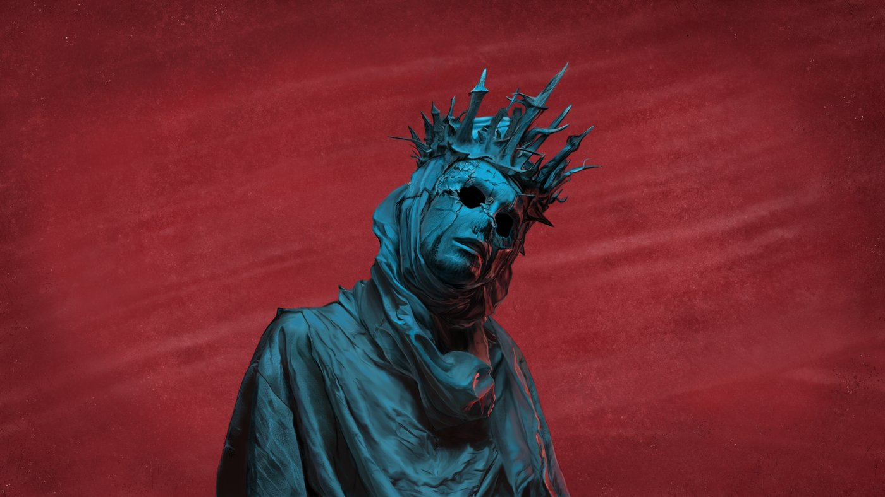
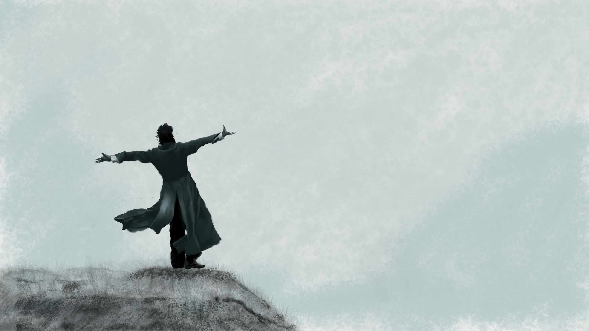
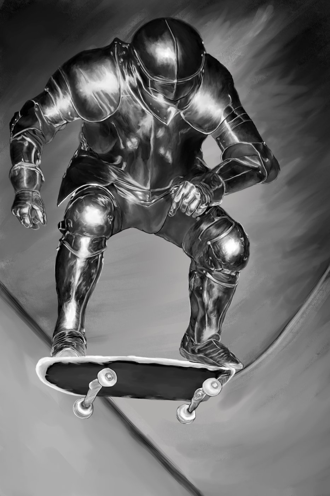
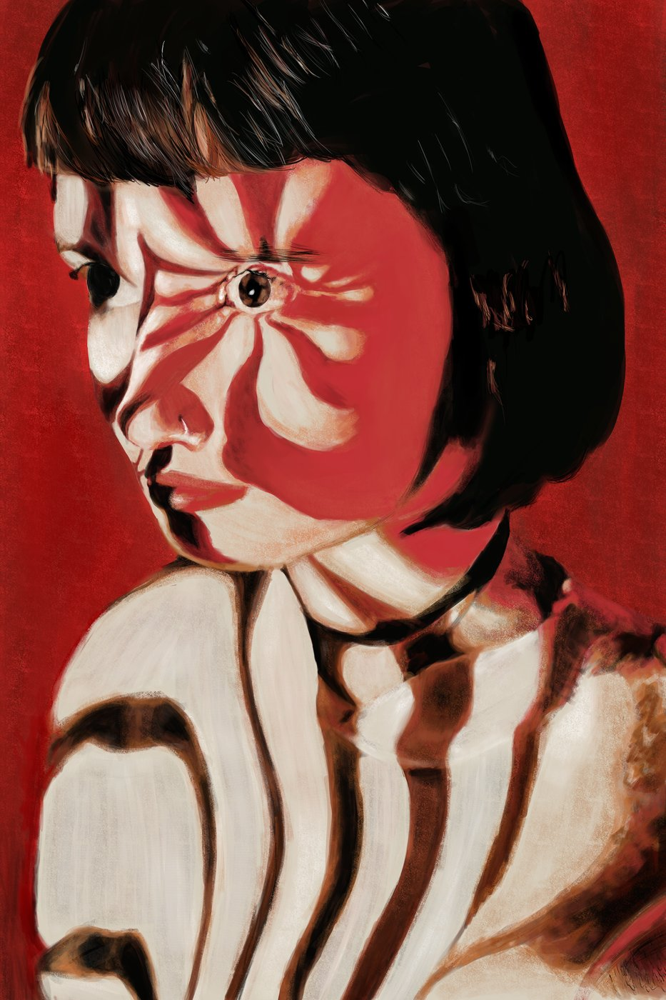
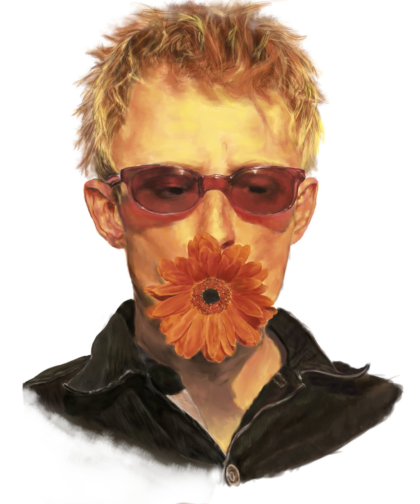
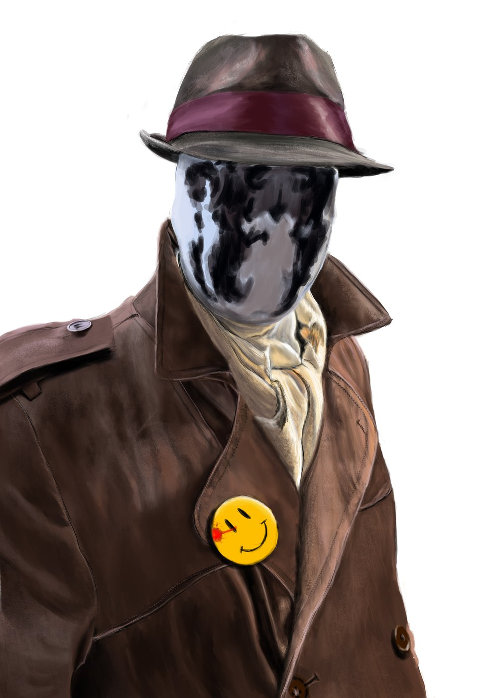

Sou o Davi, artista digital. Desenho no Clip Studio Paint e gosto de levar o render ao realismo, principalmente em superfícies metálicas e cromadas.
Faço fan arts, estudos e comissões. Também publico meus trabalhos na minha página no ArtStation.
Fan arts, estudos e comissões desenhados no Clip Studio Paint.






Sou o Davi, artista digital. Desenho no Clip Studio Paint e gosto de levar o render ao realismo, principalmente em superfícies metálicas e cromadas.
Faço fan arts, estudos e comissões. Também publico meus trabalhos na minha página no ArtStation.
Seu personagem ou cena favorita, com cores e iluminação trabalhadas.
Personagem completo, com cenário de fundo e resolução pronta para impressão.
Peles, cabelos e metais com acabamento realista.